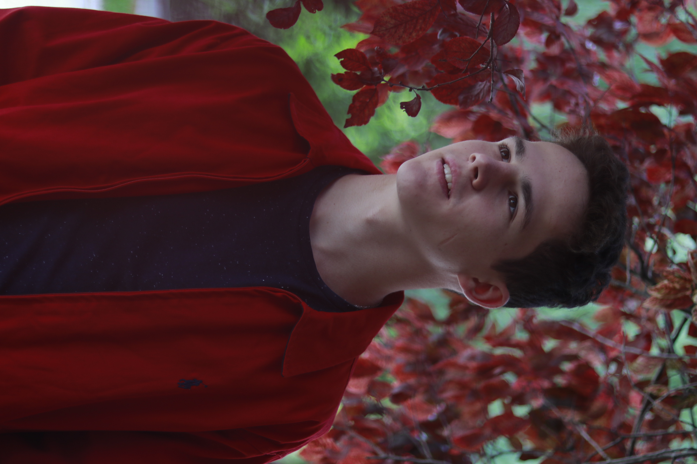

Esküvő
Imádom megörökíteni mások életének fontos pillanatait. Nagyon élvezem, amikor felkérnek egy-egy esküvő fotózására. Ilyenkor egy csodálatos esemény részvevője lehetek, és nem csak részt vevője, mert az án munkámon is múlik, hogy hogyan fognak emlékezni a jelenlévők életük egyik legfontosabb napjára. Eddig nem sok esküvőn volt lehetőségem kattingatni, de remélem, hogy ez a jövőben meg fog változni, mert nagyon élvezem csinálni. képek
Tárgy
A tárgyfoózás az egyik kedvenc műfajom. A leghétköznapi tárgyakban is meg lehet látni a különlegességet. Nekem az egyik célom az, hogy megmutassam ezeket a kis csodákat. képek
Portré
Portrékat eddig még nem sok emberrel készítettem, de azokat nagyon élveztem. Minden ember különleges, és szeretem ezt megmutatni. Nincs is jobb érzés, mint mikor egy jól sikerült kép után látom az elégedettséget az alanyok szemében. Én akkor érzem magam a legjobban, amikor az alany is, ezért törekszem arra, hogy ilyen helyzetekben a maximumot hozzam ki magamból. képek